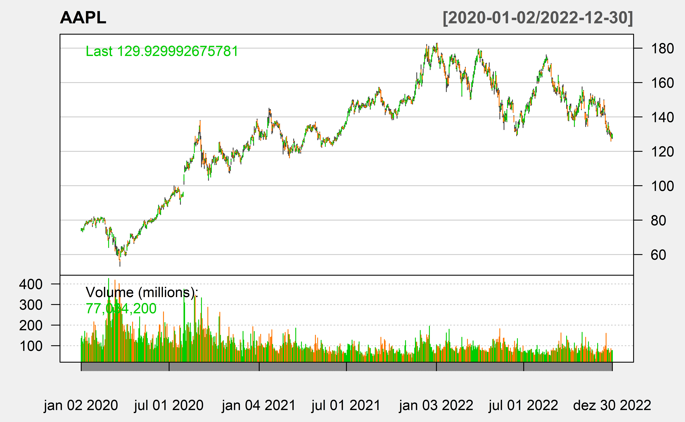
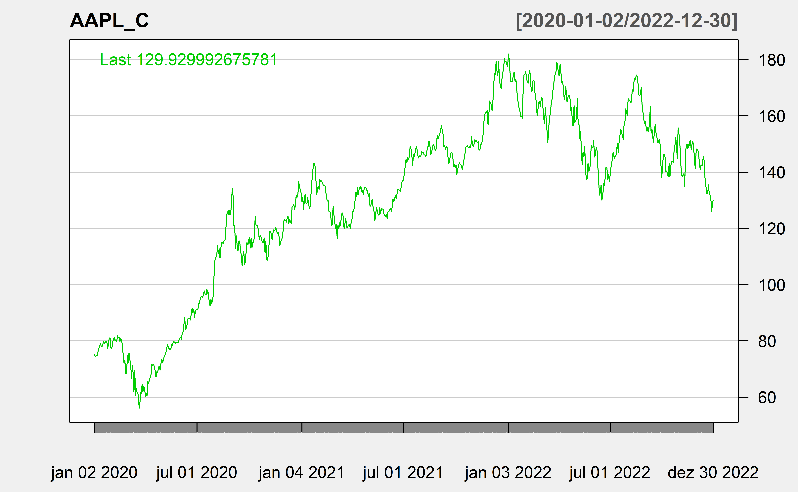

library(tidyverse)
library(kableExtra)Distribuições de Probabilidade
Carregando bibliotecas
Fraudes em uma loja
Buscando obter um modelo para o número de fraudes com cartão numa loja, foram coletadas, ao longo de 1 ano, o número de ocorrências por semana. Os dados obtidos foram:
0 ocorrências em 9 semanas
1 ocorrência em 14 semanas
2 ocorrências em 13 semanas
3 ocorrências em 9 semanas
4 ocorrências em 4 semanas
5 ocorrências em 2 semanas
6 ocorrências em 1 semana
semanas <- c(9, 14, 13, 9, 4, 2, 1)
sum(semanas)[1] 52probabilidade <- semanas/52
probabilidade[1] 0.17307692 0.26923077 0.25000000 0.17307692 0.07692308 0.03846154 0.01923077round(probabilidade, 2) # arredondando para 2 casas decimais[1] 0.17 0.27 0.25 0.17 0.08 0.04 0.02Criando uma tabela
fraude_loja <- data.frame(n_fraudes=0:6, prob=probabilidade)
fraude_loja n_fraudes prob
1 0 0.17307692
2 1 0.26923077
3 2 0.25000000
4 3 0.17307692
5 4 0.07692308
6 5 0.03846154
7 6 0.01923077fraude_loja %>% kbl(digits = 2) %>% kable_minimal()| n_fraudes | prob |
|---|---|
| 0 | 0.17 |
| 1 | 0.27 |
| 2 | 0.25 |
| 3 | 0.17 |
| 4 | 0.08 |
| 5 | 0.04 |
| 6 | 0.02 |
Visualizando a distribuição
fraudes <- 0:6
plot(fraudes, probabilidade, xlab = "Numero de fraudes numa semana", ylab = "Probabilidade", type = "h")
Probabilidade Acumulada
prob_acum <- cumsum(probabilidade)
fraude_loja2 <- data.frame(n_fraudes=0:6, prob_acum=prob_acum)
fraude_loja2 %>% kbl(digits = 2) %>% kable_minimal()| n_fraudes | prob_acum |
|---|---|
| 0 | 0.17 |
| 1 | 0.44 |
| 2 | 0.69 |
| 3 | 0.87 |
| 4 | 0.94 |
| 5 | 0.98 |
| 6 | 1.00 |
plot(fraudes, prob_acum, xlab = "Numero de fraudes numa semana",
ylab = "Probabilidade Acumulada (P(X<=x))", type = "S")
Distribuições de Probabilidade no R
No R nós temos quatro funções que podem nos fornecer elementos de uma distribuição de probabilidade:
Densidade ou probabilidade
Probabilidade acumulada / Função distribuição acumulada
Quantis
Números aleatórios
Exemplo de distribuição discreta
Probabilidades de uma binomial
x <- 0:50
plot(x, dbinom(x, size=50, prob = 0.30), type="h")Probabilidade Acumulada
plot(x, pbinom(x, size=50, prob = 0.30))
Quantis
qbinom(seq(0.1,0.9,0.1), size = 50, prob=0.30)[1] 11 12 13 14 15 16 17 18 19Números aleatórios
set.seed(22)
rbinom(50, size = 50, prob=0.3) [1] 13 15 23 15 18 17 16 17 14 14 21 16 15 18 14 11 14 12 16 14 12 14 15 18 17
[26] 20 15 24 12 12 12 13 18 12 22 9 18 10 10 15 13 14 15 8 13 12 12 14 13 13Probabilidades de uma Poisson
x <- 0:6
plot(x, dpois(x, lambda = 1.9), type="h")Lei de Benford
Em 1996 T.P. Hill mosrou que podemos aproximar as frequencias dos dígitos usando a expressão abaixo.
x <- 1:9
prob <- log10(1 + 1/x)
bendford <- data.frame(x=x, prob=prob)
bendford %>% kbl(digits = 3) %>% kable_minimal()| x | prob |
|---|---|
| 1 | 0.301 |
| 2 | 0.176 |
| 3 | 0.125 |
| 4 | 0.097 |
| 5 | 0.079 |
| 6 | 0.067 |
| 7 | 0.058 |
| 8 | 0.051 |
| 9 | 0.046 |
Exemplo de distribuição contínua
Distribuição Exponencial
Tempo até uma falha
set.seed(22)
curve(dexp(x, 4), 0, 2, xlab = "t", ylab = "dexp(t, 4)")
x <- seq(0, 0.5, 0.001)
lines (x, dexp(x, 4), type = "h", col="grey")
text(0.5, dexp(0.3, 4), expression(P(T <= 0,5)))Distribuição Normal
x <- seq(-3,3,0.1)
plot(x, dnorm(x, mean=0, sd=1), type="l", xlab = "Quantis da Normal Padrão", ylab="Densidade de Probabilidade")Distribuição Normal
x <- seq(-3,3,0.1)
plot(x, dnorm(x, mean=0, sd=1), type="l", xlab = "Quantis da Normal Padrão", ylab="Densidade de Probabilidade")
y <- seq(-1, 1, 0.01)
lines(y, dnorm(y, mean = 0, sd = 1), type = "h",
col = "grey")
Função distribuição acumulada
prob_acum <- pnorm(x, mean=0, sd=1)
plot(x, prob_acum, xlab = "Quantis da Normal Padrão",
ylab = "FDA (P(X<=x))", type = "l")Quantil da Normal
qnorm(c(0.25,0.5,0.75,0.95), mean=0, sd=1)[1] -0.6744898 0.0000000 0.6744898 1.6448536qnorm(c(0.95,0.975,0.99), mean=0, sd=1)[1] 1.644854 1.959964 2.326348Números Aleatórios
set.seed(22)
rnorm(10, mean=0,sd=1) [1] -0.51213909 2.48518368 1.00782615 0.29281457 -0.20895936 1.85809239
[7] -0.06602641 -0.16276495 -0.19986068 0.30056173Gráfico QQ Normal
set.seed(22)
x <- rnorm(30, mean = 10, sd=1)
qqnorm(x)
qqline(x)
Gráfico QQ Normal
set.seed(22)
x <- rnorm(100, mean = 10, sd=1)
qqnorm(x)
qqline(x)Gráfico QQ Normal
set.seed(22)
x <- rnorm(1000, mean = 10, sd=1)
qqnorm(x)
qqline(x)
Como fica a exponencial?
set.seed(22)
x <- rexp(100, rate=2)
qqnorm(x)
qqline(x)Como fica a t?
set.seed(22)
x <- rt(100, df=2)
qqnorm(x)
qqline(x)Como fica a t?
x <- rt(100, df=5)
qqnorm(x)
qqline(x)Como fica a t
x <- seq(-3,3,0.1)
curve(dt(x, df=2), -3, 3, xlab = "", ylab = "Densidade de Probabilidade", col=1, ylim=c(0,0.5))
curve(dnorm(x, mean=0, sd=1), -3, 3, col=2, add=TRUE)
legend(1,0.5, c("t", "Normal"), col=1:2, lty = 1)Outro gráfico QQ
library(car)Carregando pacotes exigidos: carData
Attaching package: 'car'The following object is masked from 'package:dplyr':
recodeThe following object is masked from 'package:purrr':
someset.seed(22)
x <- rt(100, df=5)
qqPlot(x, distribution="norm")[1] 35 18qqPlot(x, distribution="t", df=5)[1] 35 18Como fica a Lognormal?
x <- rlnorm(100, meanlog = 0, sdlog = 1)
qqnorm(x)
qqline(x)